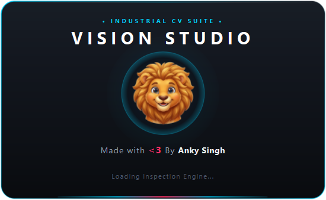

Getting Started & System Architecture
A comprehensive guide to installation, runtime environments, user interface anatomy, and the Clean Standby operational model of VisionStudio.
System Requirements & Installation
VisionStudio runs seamlessly across Windows 10/11 and industrial Linux edge platforms (Ubuntu 20.04+, Debian, Raspberry Pi OS).
Hardware Recommendations
- Processor: Intel Core i5/i7 (8th Gen+), AMD Ryzen 5+, or ARM64 (Raspberry Pi 4/5 for edge inference).
- Memory: 8 GB RAM minimum (16 GB recommended for high-resolution cameras).
- Graphics / Video: DirectShow compatible USB3 / GigE Vision interface or network adapter.
- Network: 1 Gbps Ethernet connection for industrial PLC and RTSP IP camera bandwidth.
Software Installation & Quick Launch
VisionStudio provides a 1-click automated launch script that validates your Python environment, automatically detects and installs all missing dependencies from requirements.txt, and opens the application:
# Double-click or run from command prompt:
Launch_VisionStudio.bat# 1. Verify and diagnose dependencies
python check_requirements.py
# 2. Install all required dependencies
pip install -r requirements.txt
# 3. Launch VisionStudio
python main.pyUser Interface Anatomy

Top Control Toolbar
Hardware connection status with dynamic color-coded Connect / Disconnect button (GREEN when live, RED when disconnected), protocol selector, Single/Split Viewport toggle, Camera Calibration dialog, PLC & Remote Devices manager, and Recipe JSON Save/Load.
Dual-Window Split Viewport
Inspect and compare any two pipeline steps side-by-side (Window A vs Window B) with synchronized 1000% subpixel pan/zoom, difference heatmap overlays, blend transparency slider, and real-time pixel inspector crosshair HUD (X, Y, RGB, Gray).
Dynamic Property Inspector
Right-docked parameter tuning drawer. Automatically generates native PyQt6 spinboxes, synchronized sliders, dropdown selectors, and color pickers from the selected operation's parameter schema. Supports debounced live tuning with zero code edits.
Sequential Pipeline Table
Chained inspection sequence with step-level execution benchmarks, intermediate buffer caching, non-destructive step bypass toggling, input source branching, step reordering (Move Up/Down), duplication, and direct PLC hardware link routing.
Spreadsheet DAG Engine
In-Sight spreadsheet grid featuring mathematical formula evaluation, topological dependency sorting, and multi-tool coordination across cells A0 through H32 with dot-notation property extraction.
Searchable Add Step Dialog
Instant search dialog categorizing 25+ industrial computer vision algorithms: Filters, Thresholds, Morphological operations, Edge detectors, Geometric Shapes, Hand Trackers, OCR, Metrology Calipers, and YOLO Deep Learning.
Interactive On-Canvas ROI Handles
8 resize handles with context-aware cursors and live floating coordinate pill HUD [X, Y, W, H]. Drag handles directly on the canvas to update Property Inspector spinboxes in real-time with boundary clamping.
Camera Optical Calibration
2-point reference line measurement tool translating raw pixel distances into calibrated physical dimensions (mm/inches) and propagating the scale factor across all metrology caliper steps.
